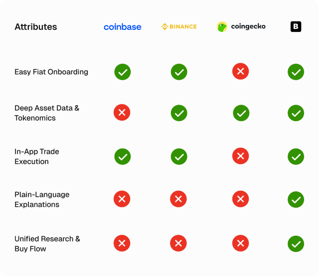
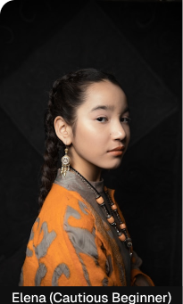

Bron | A crypto asset store app
Overview
Bron app is a crypto app designed to help users store and exchange crypto assets. It features an ai chatbot integrated into it to make it easier to use.

Design Process
For the design process, I followed 5 critical steps. Note that the steps are non linear
[Empathize] → [Define Problem & Goals] → [Ideate] → [Prototype] → [Test & Iterate]
The Problem
Users delay in making crypto purchase decisions because crypto research stressful and takes a really long time.
The Goal
The goal of this project is to design an app that makes crypto assets research easier for the everyday users and make it easier to onboard new users who find crypto research too complex into the crypto space.
Research
The research phase is to understand the user's feelings, behaviors, & pain points and also validate my hypothesis without bringing my own biases into it. It includes, user interviews and competitive analysis.
Competitor's Analysis
To understand how existing platforms attempt to solve the research gap, we analyzed three dominant archetypes in the current crypto ecosystem. Our focus was explicitly on how they handle user education and purchase friction.

Our analysis revealed a massive gap in the market. Existing apps either offer easy buying with no research, or deep research with no buying. By integrating an AI chatbot directly into the exchange interface, Bron bridges this gap by allowing users to ask complex research questions and instantly execute trades based on those answers, all within a single ecosystem.
User Personas
To ensure the Bron app addresses the full spectrum of user friction, we synthesized our research into two distinct archetypes: the hesitant newcomer and the efficiency-driven veteran.



How Might We Questions
This is the bridge between the problem statement and the solution. We ask these questions to frame the brainstorming process.
- HMW simplify complex tokenomics and deep asset data so a beginner (Elena) feels confident buying, without alienating a pro (Marcus)?
- HMW integrate the research phase directly into the purchase flow so users don't have to switch between different apps?
- HMW reduce the time it takes to validate an asset's safety from hours down to seconds?
Defining The Core Features
Based on the HMW questions, here are the core solutions we decided to build into the Bron app:
- The AI Research Assistant (The Core Solution): A conversational AI integrated directly into the asset page. It can ingest complex whitepapers, GitHub developer activity, and market sentiment, and translate them into plain-language summaries or deep technical analysis depending on what the user asks.
- "In-Context" Trade Execution: Users shouldn't have to leave the chat to buy. We will include a dynamic "Buy/Sell" component right inside the chat interface, allowing users to execute trades the exact second their research validates a decision.
- Dynamic Risk & Utility Cards: Instead of dumping a massive spreadsheet of data on the user, the AI generates bite-sized summary cards (e.g., "What does this coin do?", "Bull vs. Bear Case", "Safety Score") that the user can expand if they want more detail.
Paper Wireframes
To begin the design stage, I designed, brainstormed, added and removed ideas on a paper wireframe to help give a quick view of what the final design will look like, tailoring them to the Solutions above.
Information Architecture
-
1.0 Onboarding & Entry Flow
- 1.1 Splash Screen: Brand welcome visual & key value proposition.
-
1.2 Verification & Passcode:
- 1.2.1 Secure PIN / Keypad authentication.
- 1.2.2 Biometric login (Face ID / Touch ID).
-
2.0 Portfolio & Dashboard (Home)
- 2.1 Balance & Performance Overview: Total portfolio value, percentage gains/losses, line/candlestick price chart over time.
-
2.2 Market & Watchlist:
- 2.2.1 Top Movers / Gainers & Losers.
- 2.2.2 Tracked Crypto Assets (SOL, ETH, BTC, etc.).
- 2.3 Quick Navigation Bar: Persistent entry points to Search, AI Chat, and Receive/Deposit.
-
3.0 Asset Detail & Deep Research
- 3.1 Asset Header: Live price, 24-hour change, and market cap.
- 3.2 Interactive Price Chart: Granular historical timeframes (1D, 1W, 1M, 1Y, ALL).
-
3.3 AI Insights & Summary Cards:
- 3.3.1 Utility & Fundamentals Card: What the asset does in plain language.
- 3.3.2 Tokenomics Card: Supply cap, inflation rate, and burn rate breakdown.
- 3.3.3 Market Sentiment & Developer Activity: GitHub commit volume and community sentiment score.
- 3.4 Action Bar: Quick action trigger to "Receive [Asset]" or "Ask Bron AI".
-
4.0 AI Research Assistant (Conversational Interface)
- 4.1 Prompt Starter Drawer: Suggested quick prompts ("Is this tokenomics safe?", "Summarize recent GitHub activity", "What are top communities saying?").
-
4.2 Chat Conversation View:
- 4.2.1 User query bubbles.
- 4.2.2 Bron AI response cards formatted with plain-language bullets.
- 4.2.3 Source citations & verified links (Santiment, Token Terminal, Whitepaper, X/Twitter).
-
4.3 Embedded Action Widgets:
- 4.3.1 Actionable [ Receive Asset ] card generated directly within chat responses.
- 4.3.2 [ Add to Watchlist ] and [ Set Price Alert ] buttons.
-
5.0 Receive & Deposit Flow (Receive Only)
- 5.1 Asset Selection: Select token to receive (e.g., SOL, ETH, USDC).
-
5.2 Deposit Address & QR Screen:
- 5.2.1 Generated unique wallet QR code.
- 5.2.2 One-tap "Copy Address" button.
- 5.2.3 Network verification warning (e.g., "Only send Solana network tokens to this address").
-
5.3 Keypad / Amount Input (Optional Transfer Entry):
- 5.3.1 Dynamic numeric keypad to specify requested amount.
- 5.3.2 Fiat / Crypto unit toggle.
-
5.4 Transaction Confirmation & Success Modal:
- 5.4.1 Transaction status screen (Pending / Received).
- 5.4.2 Return to Dashboard / Return to Research button.
The Final Design
I converted the completed paper wireframes to the HIFI screens.


User Impacts
- 78% Reduction in Research Time
- Less Context Switches
- Higher Decision Confidence
Anticipated Business Impact
A product that reduces friction directly improves business performance metrics.
- Higher Conversion Rates
- Increased User Retention
- Lower Onboarding CAC (Customer Acquisition Cost): By catering to cautious beginners who usually abandon traditional exchange apps, Bron expands the TAM (Total Addressable Market) for crypto onboarding.
What i learnt
AI Needs Guardrails: We learned that users demand transparency. Including direct links to source data (like GitHub, Santiment, or Whitepapers) alongside AI summaries was crucial for building trust.
Iterations
We included and designed an interface that allows the inclusion of links to every summarized data in chat